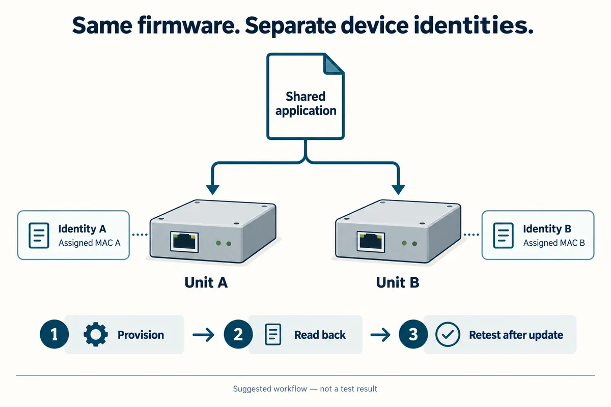

The first unit connects to the dashboard. So does the second—until you plug them in together. For a team preparing several trial devices, that is a reason to inspect what was copied with the firmware. Each unit needs a network identity that remains distinct from the others, even when every unit runs the same program.
A MAC address identifies an Ethernet interface on the local network. An IP address serves a different purpose in sending traffic across IP networks. Changing one does not automatically fix a duplicate of the other. Before debugging your cloud service, record both addresses from both running devices.
An Ethernet frame carries separate source and destination addresses. Below, we use that to plan the step from one working prototype to several distinguishable units.
Find out where each unit gets its address
Some boards have an assigned address supplied with the hardware; other designs expect firmware to provide one. Do not infer either behavior from the presence of an Ethernet socket or a W5500 chip. Check the board documentation and the actual startup code, then read back the address that the interface is using.
WIZnet's official W5500 driver exposes setSHAR and getSHAR for the six-byte source hardware address. That tells you where this chip's active address is configured. It does not prove that a particular board has stored a unique address elsewhere or that your firmware loads it correctly.
The practical handover problem is longstanding. In an Arduino discussion dated August 16, 2012, a developer preparing several boards asked how to avoid manually typing the printed address into every sketch. The follow-up chose a utility to store it in EEPROM. That is a reported plan, not a verified production process, but it captures the decision: separate the shared application from each unit's identity.
| Item | Shared across units? | What to record |
|---|---|---|
| Application firmware | Usually yes | Exact build or version |
| Unit identifier | No | Which physical unit the record describes |
| Active Ethernet MAC | Must be distinct on the same local segment | Assigned value and where it is stored |
| IP configuration | Policy may be shared; simultaneous addresses must not clash | DHCP result or approved static settings |
Suggested build record. This is a template, not a log from manufactured units.
Choose a method that survives the next firmware update
If your board already provides an assigned MAC address, preserve and load it as intended. Otherwise, choose an address-allocation method with the person responsible for the target network. Locally administered addresses are an option for a controlled environment, but “local” does not mean that duplication is harmless. RFC 9542, section 2.1.1 explains the local/global and individual/group bits; they are not arbitrary digits to ignore when inventing an address.
Keep the per-unit record outside the portion of the image that you blindly clone, or provide an explicit provisioning step after flashing. Reading a hardware identifier can be part of that design, but shortening an identifier or hashing it is not, by itself, proof that the resulting addresses cannot collide. Record how duplicates will be detected.
Also decide what a factory reset means. Does it clear Wi-Fi or IP settings while keeping the unit's identity? Does reflashing erase the identity store? A small trial batch needs clear answers before devices leave the bench; it does not need an elaborate fleet platform to maintain a simple, checked registry.

Test the group, not just each board on its own
Start with two labeled units and a test network you control. Boot unit A, record its active MAC and IP address, and confirm its application response. Repeat for B. Then connect both at once and verify that each response can be traced to the intended physical unit. A dashboard showing two identical names is not enough evidence.
If communication becomes intermittent only when both are connected, compare their active identities first. On a managed switch, a MAC address appearing on different ports can produce a flapping report; duplicate addresses are one possible cause, alongside network topology problems. Use the switch evidence to narrow the investigation rather than treating the symptom as proof of a faulty Ethernet module. Cisco's MAC-flap troubleshooting guide.
Next, restart the units separately, restart them together and repeat after the firmware-update procedure you intend to use. Check that each MAC stays assigned to the same unit, that simultaneous IP addresses do not conflict, and that the application still identifies the correct device. These are proposed acceptance checks, not results from tested units.
Keep the network context in the handover
For a customer trial, hand over the identity list together with the expected network arrangement and reset/update behavior. That makes it possible to answer “Which box stopped responding?” without unplugging every device. It also separates an address conflict from a DHCP, cabling or application problem.
If you are preparing several connected prototypes for user testing, discuss the integration with Anvol. Bring the board details, firmware startup configuration and the results of a two-unit test; those are the concrete inputs needed to review how the next units should be configured.